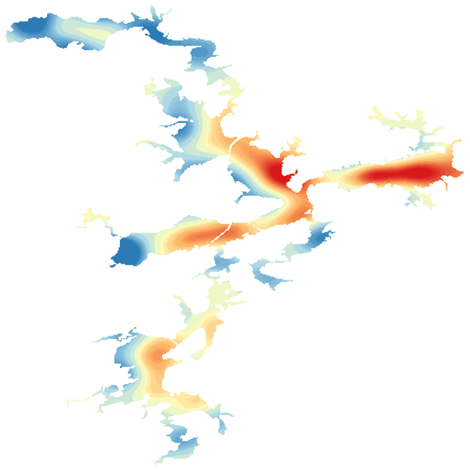

LakeScope › OK
Lake Eufaula today
Updated 2026-11-26 - Atlas Labs
Murky water, 53°F water, level falling, 3 ft below normal, windy Thursday (15 mph N).
Water level
581.02 ft
U.S. Army Corps of Engineers - 2026-11-26
7-day trend: falling (-0.20 ft). Compared with normal for this date: -2.8 ft (same weeks, 2016-2025).
Water clarity and algae
Murky water Last clear view: about a week ago. 1 cloudy pass since.
Surface temperature
53°F
seen from space on 2026-11-23

Weather, next 3 days
| Day | Sky | High / low | Wind | Rain |
|---|---|---|---|---|
| Thursday | Sunny | 47 / 28°F | 15 mph N | 0% |
| Friday | Sunny | 58 / 45°F | 10 mph SW | 0% |
| Saturday | Mostly Sunny | 63 / 45°F | 15 mph S | 0% |
Sunrise 07:08 - sunset 17:10 - Full moon. National Weather Service.
Get the LakeScope app: alerts and the 3-D view of Lake Eufaula